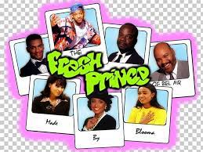

Click here to see more
The Fresh Prince was a 90's television show charting the life of Will a child who left the streets of philadelphia for his Mom's fear of him getting involved with unscrupulous characters to move in with his aunt Vivien and her family in the affluent Bel Air
Things Will had a love for:
- Carlton Banks
- High Top Trainers
- Uncle Phil
Things I dislike
- His cousin Hillary
- Thunder Cats
- Bad Haricuts